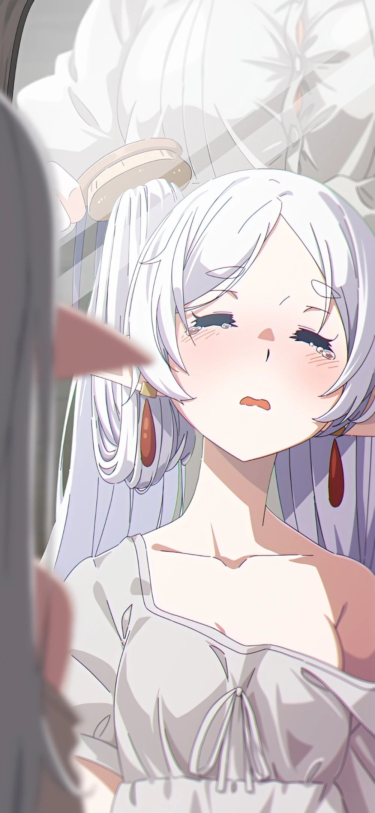
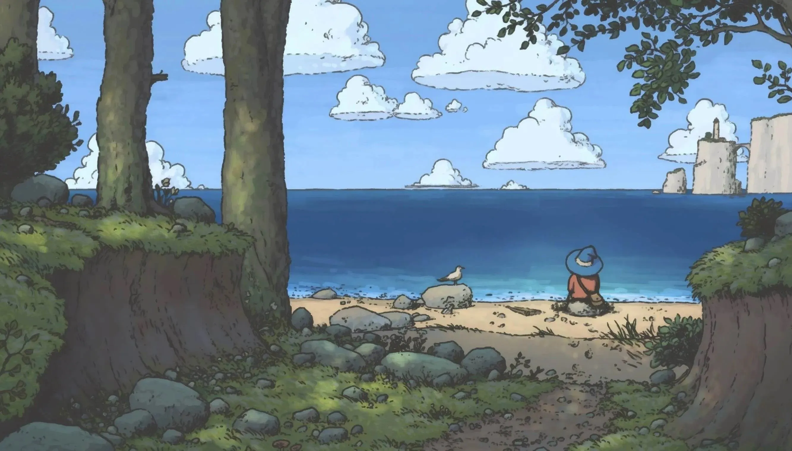
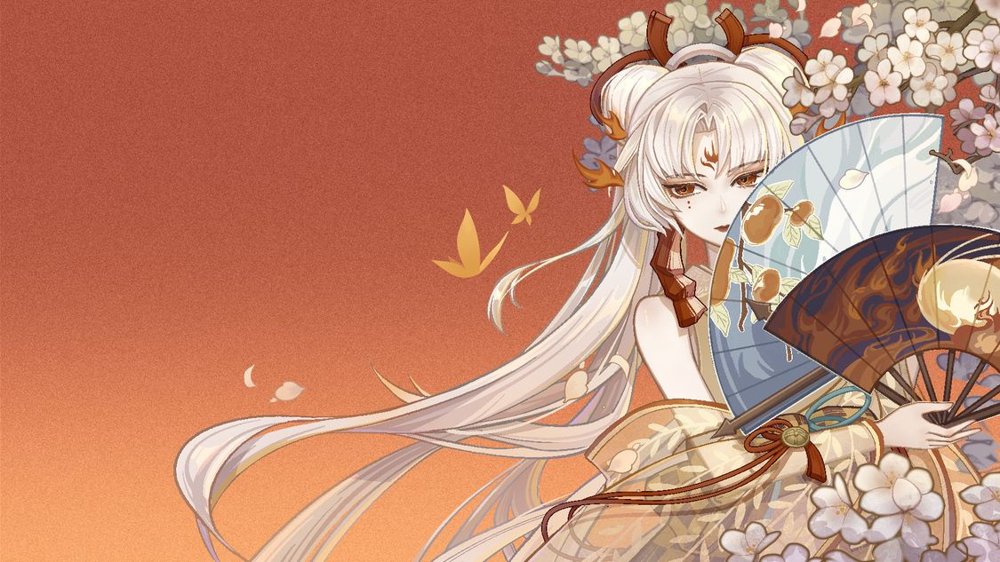
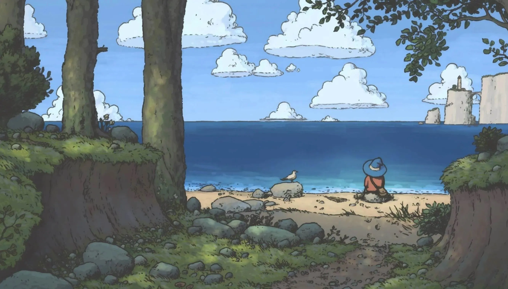
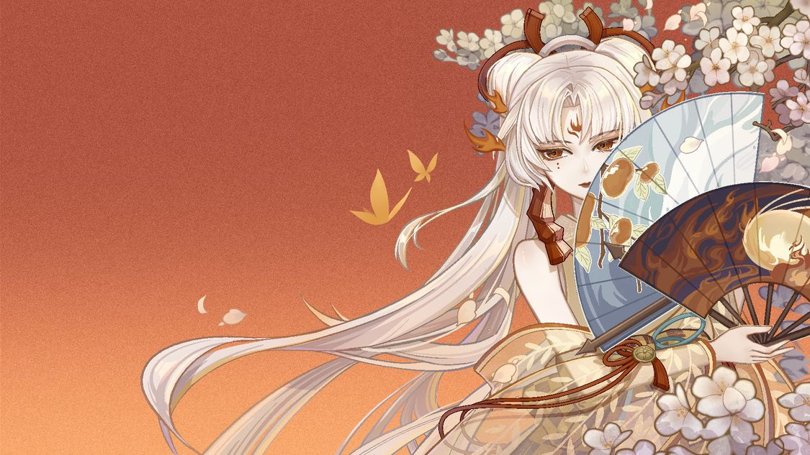
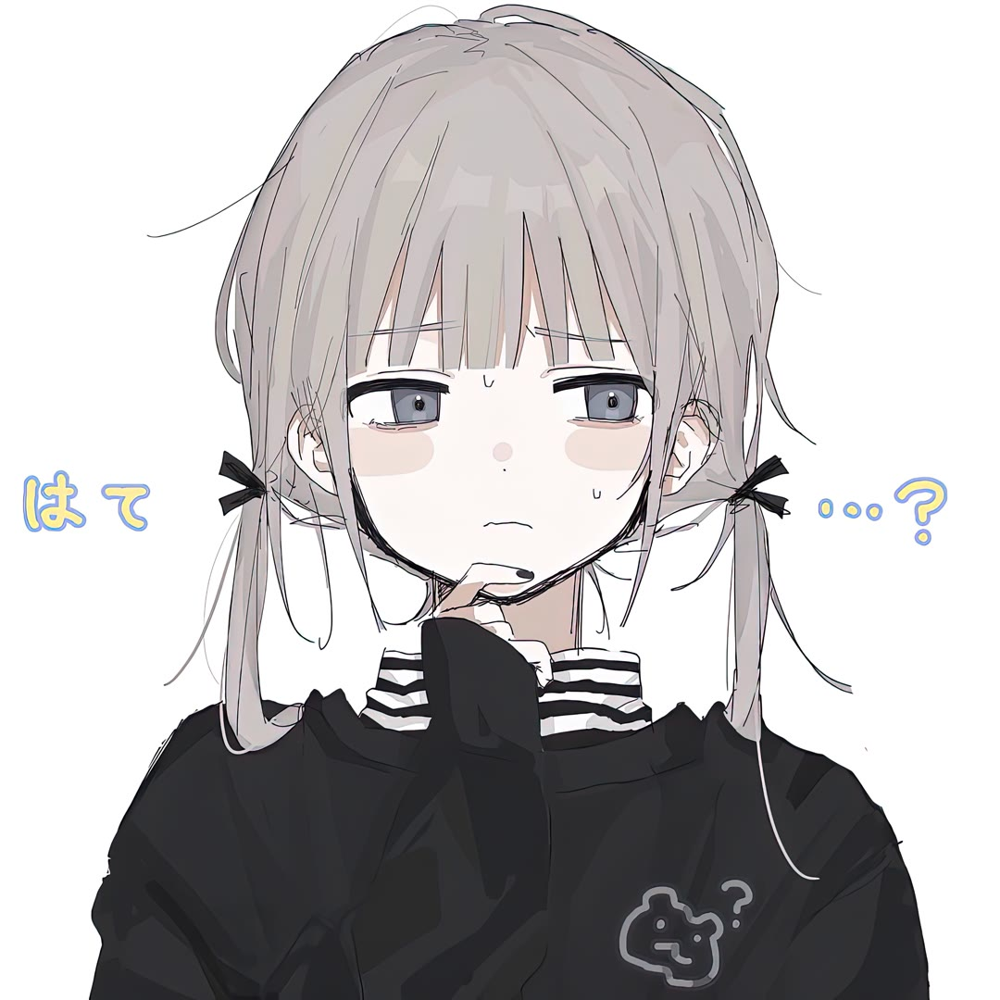

芙莉莲

translate3d(x, y, z)：沿 X/Y/Z 轴平移元素。
rotate3d(x, y, z, angle)：绕自定义轴旋转。
scale3d(x, y, z)：沿 X/Y/Z 轴缩放。
perspective（透视）定义观察者与 3D 空间的“距离”，数值越小，透视效果越强（类似镜头），可在transform中设置
transform-style: preserve-3d，让子元素在 3D 空间中保持位置（默认是 flat，子元素会被拍平到 2D 平面），必须设置在父容器
backface-visibility,控制元素背面是否可见（如翻转卡片时隐藏背面）。
.jpg)
.jpg)
.jpg)
.jpg)
.jpg)

A Covenant Between Civilization and Nature
Environmental crises now threaten humanity’s survival. Polar ice melting at unprecedented rates, 90% of seabirds ingesting plastics, and rampant deforestation expose a fractured ecosystem. These are not isolated issues but symptoms of a broken human-nature covenant.
True solutions demand dual action: individuals adopting sustainable habits and governments enforcing green policies. As Jane Goodall warned, "Protecting nature is not a choice but a necessity for civilization’s continuity." Environmentalism must evolve from "saving Earth" to redefining humanity’s role as stewards of a shared biological legacy. Only by honoring this planetary covenant can we safeguard tomorrow’s world.

.jpg)
←
→
 



点击也有效果,想通过按钮来切换,奈何不才

Smile

Slience
背景也可换为图片等等其他样式,需要更改选择器或者bgi
C
O
L
O
R

CSS：filter: drop-shadow();
添加brightness(x)亮度，及scale(x)大小
添加brightness(x)亮度，及scale(x)大小
“The supreme happiness of life is the conviction that we are loved; loved for ourselves—say rather, loved in spite of ourselves.”
“It was the best of times, it was the worst of times, it was the age of wisdom, it was the age of foolishness...”
“It was the best of times, it was the worst of times, it was the age of wisdom, it was the age of foolishness...”
可以更改下划线颜色为任意，纯色或多色渐变皆可
星露谷物语
妈妈，人生要真是星露谷就好了。随时可以到达的海边，送出礼物就能获得的友谊，付出努力就一定会有收获，失败了也只是掉东西，永远有再来的机会，而且就算什么也不干每天躺在床上评定等级的时候．爷爷也只是希望你远离世俗开开心心。妈妈，人生要真是星露谷就好了。我想有很多很多朋友，想有疼爱我的长辈。种下去就能长出来的菜，放进小桶就能酿出的酒：下雨也可以去海滩钓一整天的鱼：砍树也是充实的一天。妈妈，为什么我一直都只是在小房间里打转呢。
农场规划器
水波效果
引入 JavaScript jquery.ripples-min.js
初始化
初始化
$('body').ripples({
resolution: 1080,// 分辨率。默认值：256
dropRadius: 5,// 水波涟漪的半径。默认值：20
perturbance: 0.05,// 干扰效果。默认值：0.03
interactive: true // 是否可以用鼠标进行互动。默认值：false。
});
transform的skew
mask、mask-image、mask-size、mix-blend-mode
锥形渐变conic-gradient()
物体描边阴影filter:drop-shadow();
animation的alternate,step
animation-play-state
letter-space、contrast
scale实现下拉菜单
aspect-ratio: 16/9; 宽高比为 16:9